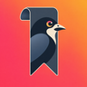

RookLast updated: November 3, 2026
These terms are an agreement between you and the developer of Rook ("Rook", "we", "us"), the seller shown on Rook's App Store page. They cover the Rook app, Rook Pro and the Rook website. By creating an account or using Rook, you agree to these terms and to our Privacy Policy. If you don't agree, please don't use Rook.
You must be at least 13 years old to use Rook. If you are under 18, or under the age of majority where you live, you need a parent or guardian's permission, and they agree to these terms for you.
You sign in with Apple, Google or a one-time email code. Keep access to that sign-in secure; you are responsible for what happens in your account. You can delete your account any time in the app under Account, then Delete account. That permanently removes your account and everything you saved.
Rook saves links to videos and posts you share to it from apps like TikTok, Instagram and YouTube, breaks them down with AI, lets you ask questions about your saves, and reminds you about them later. Rook does not store copies of the videos you save. Videos play through each platform's own player, and the content belongs to its creators and the platforms. Rook always credits the creator and links back to the original post.
We keep improving Rook, so features may change, be added or be removed. Some features depend on other companies' services (see section 7) and may stop working if those services change.
Breakdowns, summaries, recipe and workout cards, places, dates, deals and Ask answers are made by AI from what a post shows and says. They can be incomplete or wrong. Check anything important against the original post and other reliable sources. Rook does not give medical, nutritional, fitness, legal, financial or safety advice. Check ingredients for allergies, check workouts with a professional if you have a health condition, and confirm place details, opening hours, prices, codes and event dates before you rely on them.
Breakdowns are written in our own words. They are a guide to the post, not a replacement for it.
"Your content" means the links you save and the notes, albums, reminders and questions you create in Rook. You own your content. You give us permission to store, process and send your content to the services in our Privacy Policy, only as needed to run Rook for you, for example to make breakdowns, answer your questions and sync your saves. This permission ends when you delete the content or your account, except for copies we must keep by law or that are in routine backups for a short time.
You are responsible for your content and must have the right to share it with Rook. Your saves are private; other Rook users can't see them.
If you send us feedback or ideas, we may use them without owing you anything.
Rook works with content and services from other companies, including TikTok, Instagram (Meta), YouTube (Google) and Apple. Your use of their content and services is also governed by their terms. Rook uses YouTube API Services, so by using Rook with YouTube videos you also agree to the YouTube Terms of Service. If you choose Connect Instagram, you sign in on Instagram's own page and Instagram's terms apply. Rook is not affiliated with, endorsed by or sponsored by TikTok, Meta, Google or Apple. We are not responsible for other companies' content, services or websites, including posts you save and links opened from Rook.
You agree not to:
If you believe something in Rook infringes your copyright, email hello@withrook.app with your contact details, the work, where it appears in Rook, and a statement that you believe in good faith the use isn't authorized. Rook stores links and our own summaries, not the original videos. To remove a video itself, contact the platform that hosts it.
You can stop using Rook and delete your account at any time. We may suspend or close an account that breaks these terms, puts Rook or other people at risk, or that we must close by law. Where it's reasonable, we will tell you first. If we stop offering Rook entirely, we will give notice in the app or by email where we can, and you can cancel any subscription in your iPhone's Settings. Sections 5, 6, 11, 12, 13, 14 and 15 continue to apply after your use ends.
We give you a personal, non-exclusive, non-transferable license to use Rook on Apple devices you own or control, as allowed by these terms and Apple's Usage Rules in the App Store Terms of Service. Rook, its design, name, logo and software belong to us. These terms don't give you any rights to our brand.
Rook is provided "as is" and "as available". To the fullest extent the law allows, we make no promises that Rook will always be available, error-free or secure, that AI output will be accurate, or that saved posts will stay available on their platforms. Some places don't allow these disclaimers, so some of them may not apply to you.
To the fullest extent the law allows, we are not liable for indirect, incidental, special, consequential or punitive damages, or for lost data, profits or goodwill, arising from your use of Rook. Our total liability for any claim about Rook is limited to the greater of what you paid us for Rook Pro in the 12 months before the claim, or US $50. Nothing in these terms limits liability that can't be limited by law.
If you break these terms or the law while using Rook and someone makes a claim against us because of it, you agree to cover our reasonable costs of that claim, to the extent the law allows.
These terms are governed by the laws of the State of California, USA, without regard to its conflict-of-law rules. Before filing a claim, please email hello@withrook.app so we can try to resolve it informally within 30 days. Any dispute that isn't resolved will be handled in the state or federal courts in Los Angeles County, California, or in small claims court where you live. If you live in a country whose consumer laws give you the right to bring claims in your local courts, or under your local law, nothing here takes those rights away.
These terms are between you and us, not Apple. Apple is not responsible for Rook or its content. Specifically:
If anything in these terms conflicts with the Apple Licensed Application End User License Agreement on a point this section covers, this section applies.
We may update these terms as Rook changes. We will update the date above, and for important changes we will tell you in the app or by email before they take effect. If you keep using Rook after a change takes effect, the new terms apply. If you don't agree, you can stop using Rook and delete your account.
If any part of these terms can't be enforced, the rest still applies. If we don't enforce a part of these terms right away, we can still enforce it later. You can't transfer these terms to anyone else; we may transfer them if Rook is sold or reorganized. These terms and the Privacy Policy are the whole agreement between you and us about Rook.
Questions about these terms, support, or anything else: hello@withrook.app